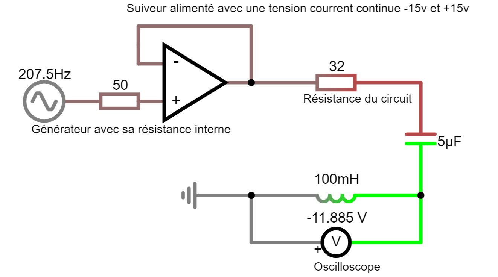
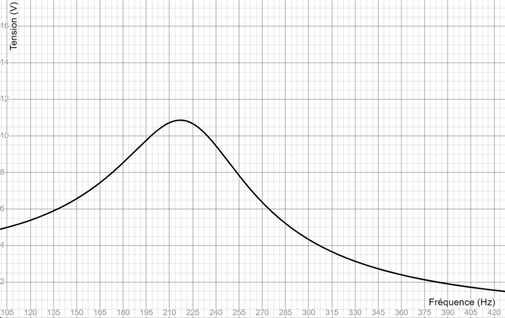

L’objectif de ce projet était de comprendre le fonctionnement des radios, en particulier le processus de filtrage des fréquences. Par équipes de trois, sur quatre séances de quatre heures en autonomie, nous avons mené des recherches et monté des circuits électriques pour les étudier. Nous avons utilisé des composants tels qu’un générateur de tension, une résistance, une inductance et un condensateur, essentiels pour concevoir un filtre électronique.
Filtrage linéaire

Nous avons choisi d’étudier un circuit linéaire RLC composé d’une résistance de 32 Ω, d’un condensateur de 5 µF et d’une inductance de 0,1 H. Cependant, dès les premières mesures, nous avons constaté que les valeurs obtenues étaient erronées par rapport aux attentes théoriques. Après analyse, nous avons identifié que la résistance interne du générateur, estimée à environ 50 Ω, perturbait le fonctionnement du circuit en modifiant les mesures.
Pour résoudre ce problème, nous avons intégré un suiveur de tension. Ce dispositif, basé sur un amplificateur opérationnel, permet de transmettre un signal en maintenant la même tension d’entrée et de sortie, tout en isolant électriquement les composants amont et aval. En annulant l’impact de la résistance interne du générateur, le suiveur a permis d’obtenir des mesures plus précises. Une fois le montage corrigé, nous avons réalisé plusieurs mesures sur une plage de fréquences pour déterminer la fréquence filtrée par le circuit. Les résultats obtenus correspondaient à nos calculs théoriques, avec une fréquence de résonance autour de 220 Hz.
.jpg)

Cependant, en comparant notre graphique expérimental au modèle théorique, nous avons observé un filtrage peu marqué et un facteur de qualité trop faible, ce qui réduisait l’efficacité du circuit. Le comportement mesuré ressemblait davantage à celui d’un circuit avec une résistance de 50 Ω qu’à notre montage prévu avec 32 Ω. Cela suggérait un défaut dans notre suiveur, combiné à des incertitudes liées à la qualité des composants, tels que le condensateur et l’inductance. En conclusion, nous avons déterminé que le matériel mis à disposition était trop ancien et peu précis pour garantir des résultats fiables.
Ce projet nous a néanmoins permis de développer des compétences clés. Nous avons amélioré notre capacité à analyser et résoudre des problèmes techniques en identifiant des sources d’erreur dans un circuit et en mettant en œuvre des solutions adaptées, comme l’intégration d’un suiveur. Nous avons également renforcé notre aptitude à travailler en équipe sur un projet complexe et à gérer des contraintes techniques de manière autonome. Malgré les limites matérielles, ce travail a enrichi notre compréhension des circuits électroniques et des principes du filtrage des fréquences.